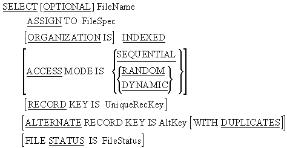
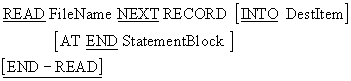
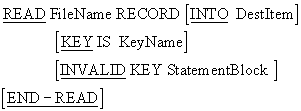
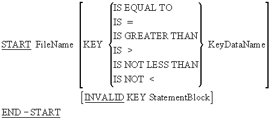

- Introduction Unit aims, objectives and prerequisites.
- A look at some programs that use Indexed files We begin with three example programs. The first creates an Indexed file from a Sequential file, the second reads the Indexed file sequentially or either the primary or the alternate key, and the third reads the file directly on either key.
- Indexed file organization Explains by means of an animated diagram how the index of the primary key is organized and shows how it is used to read a record directly. Explains how the alternate key index is organized and shows how it is used to read a record directly.
-
Indexed file - declarations
Examines the
SELECTandASSIGNclause declarations required for an Indexed file. -
Indexed file - file processing verbs
Examines the Procedure Division verbs used to process Indexed files -
OPEN,CLOSE,READ,WRITE,REWRITE,DELETE,START - A comprehensive example We end with a comprehensive problem specification and solution.
Introduction
The aim of this unit is to provide you with a solid understanding of; the organization of Indexed files, the declarations required for them and the Procedure Division verbs used to process them.
By the end of this unit you should:
-
Be able to write the
ENVIRONMENT DIVISIONand Data Division declarations required for a Indexed file. - Understand how the primary key and alternate key indexes are organized.
-
Be able to used the use the
START,OPEN,CLOSE,READ,WRITE,REWRITEandDELETEProcedure Division verbs required to process Indexed files. - Be able to process an Indexed file directly or sequentially.
You should be familiar with the material covered in the unit;
- Introduction to direct access files
A look at some programs that use Indexed files
We'll start by looking at some example programs that use Indexed file. In the first program, an Indexed file is created by reading records from a Sequential file and writing them to the Indexed file. The second program shows how to read an Indexed file sequentially on either the primary or the alternate key. In the third program we demonstrate how to read an Indexed file directly on either key.
You can download both the program and the sequential data file it uses.
Download the Indexed file example program 1
Download the Sequential data file
This example program demonstrates how to read an Indexed file sequentially on either the primary key (VideoCode) or the alternate key (VideoTitle).
Below we see the results produced by two runs of the program.
RUN OF INDEX-EG2.EXE USING VIDEOCODE KEY
Enter key : 1=VideoCode, 2=VideoTitle ->1
00121 FLIGHT OF THE CONDOR, THE 03
00333 PREDATOR 02
00444 LIVING EARTH, THE 03
01001 COMMANDO 02
01100 ROBOCOP 01
02001 LEOPARD HUNTS IN DARKNESS, A 03
02121 DIRTY DANCING 04
03031 COMPETENT CREW 05
03032 YACHT MASTER 05
04041 OPEN OCEAN SAILING 05
04042 PRINCESS BRIDE, THE 06
04444 LIFE ON EARTH 03
05051 OVERBOARD 01
06061 HOPE AND GLORY 07
07071 AMONG THE WILD CHIMPANZEES 03
08081 WHALE NATION 03
09091 BESTSELLER 07
10001 WICKED WALTZING 04
11111 TERMINATOR, THE 02
13301 MASSACRE AT MASAI MARA 03
14032 KNOTTY PROBLEMS FOR SAILORS 05
17001 ALIEN 07
17002 ALIENS 07
17041 GARFIELD TAKES A HIKE 06
18001 SURVIVING THE STORM 05
19444 PINOCCIO 02
RUN OF INDEX-EG2 USING VIDEOTITLE KEY
Enter key : 1=VideoCode, 2=VideoTitle ->2
17001 ALIEN 07
17002 ALIENS 07
07071 AMONG THE WILD CHIMPANZEES 03
09091 BESTSELLER 07
01001 COMMANDO 02
03031 COMPETENT CREW 05
02121 DIRTY DANCING 04
00121 FLIGHT OF THE CONDOR, THE 03
17041 GARFIELD TAKES A HIKE 06
06061 HOPE AND GLORY 07
14032 KNOTTY PROBLEMS FOR SAILORS 05
02001 LEOPARD HUNTS IN DARKNESS, A 03
04444 LIFE ON EARTH 03
00444 LIVING EARTH, THE 03
13301 MASSACRE AT MASAI MARA 03
04041 OPEN OCEAN SAILING 05
05051 OVERBOARD 01
19444 PINOCCIO 02
00333 PREDATOR 02
04042 PRINCESS BRIDE, THE 06
01100 ROBOCOP 01
18001 SURVIVING THE STORM 05
11111 TERMINATOR, THE 02
08081 WHALE NATION 03
10001 WICKED WALTZING 04
03032 YACHT MASTER 05If you downloaded the first example program and its data file you should already have the Indexed file (it was produced when you ran the first example program). You can use this file with the second Indexed file example program.
Download Indexed file example program 2
This example program demonstrates how to read an Indexed file directly using either the primary key (VideoCode) or the alternate key (VideoTitle).
Below we see the results produced by a number of runs of the program.
RUN OF INDEX-EG3.EXE USING VIDEOCODE
Chose key VideoCode = 1, VideoTitle = 2 -> 1
Enter Video Code (5 digits) -> 02121
02121 DIRTY DANCING 04
RUN OF INDEX-EG3.EXE USING VIDEOCODE
Chose key VideoCode = 1, VideoTitle = 2 -> 1
Enter Video Code (5 digits) -> 05051
05051 OVERBOARD 01
RUN OF INDEX-EG3.EXE USING VIDEOTITLE
Chose key VideoCode = 1, VideoTitle = 2 -> 2
Enter Video Title (40 chars) -> OVERBOARD
05051 OVERBOARD 01
RUN OF INDEX-EG3.EXE USING VIDEOTITLE
Chose key VideoCode = 1, VideoTitle = 2 -> 2
Enter Video Title (40 chars) -> DIRTY DANCING
02121 DIRTY DANCING 04
RUN OF INDEX-EG3.EXE USING NON EXISTENT VIDEOCODE
Chose key VideoCode = 1, VideoTitle = 2 -> 1
Enter Video Code (5 digits) -> 44444
VIDEO STATUS :- 23You can use the Indexed file that is created when you run the first sexample program with this third Indexed example program.
Indexed file organization
In the unit "Introduction to direct access files", we showed how an Indexed file is organized and we noted;
- that the records in the Indexed file are held sequenced on ascending primary key and that this allows us to access the file sequentially on that key.
- that over these records the file system builds an index which allows direct access to record using the primary key.
- that an Indexed file may be read sequentially on any of its alternate keys.
While we explained how primary key index of an Indexed file was organized, and how sequential access on the primary key is achieved, we did not explain how the alternate indexes are organized or how the file can be accessed sequentially on any of its alternate keys.
In this section we revisit, and expand on, the explanation of how the primary key index is organized and how it is used to read a record directly. In addition, we show an alternate key index is arranged and we show how this index is used to read the file directly. We also describe how sequential access on the alternate key is achieved.
Records in an Indexed file are sequenced on ascending primary key. Over the actual data records, the file system builds the primary key index.
When direct access is required on the primary, the file system uses this index to find, read, insert, update or delete, the required record.
Because the actual data records are arranged on ascending primary key, sequential access on the primary key is achieved by simply reading these data records in sequence.
For each alternate key specified in an Indexed file, an alternate index is built. However, the lowest level of an alternate index does not contain actual data records. Instead, this level made up of base records that contain only the alternate key value and a pointer to where the actual record is. These base records are organized in ascending alternate key order.
Sequential access on an alternate key is achieved by reading the base records one after another in sequence. As each base record is read, its pointer is used to access the actual data record.
While this arrangement means that an Indexed file can be processed sequentially on its alternate keys, reading the file sequentially on an alternate key is slower than on the primary key. This is because alternate key access requires two I-O operations to get the data. The first gets the alternate key base record and the second gets the actual data record.
The animation below shows how the data records of an Indexed file and the overlying primary key index are organized and how the index is used to read a record directly.
The animation also shows how an alternate key index is organized and how this index is used to read a record directly.
The algorithm used for traversing both indexes is -
IF RecordKeyValue > RequiredKeyValue
take this branch
ELSE
go to next index record
END-IFIndexed file - Declarations
As we have seen in the example programs, when Indexed files are used a number of new
entries for the SELECT and
ASSIGN clause are required.

The RECORD KEY phrase defines the Indexed file's primary key.
Every Indexed file must have a primary key. The key must be a field in the record description that contains a unique value for each record.
Contrast this with Relative Files where the key must not be part of the file's record description.
The key field must be a numeric or alphanumeric data item.
In addition to the primary key, up to 254 alternate keys may be defined for the file.
Just as with the primary key, these alternate keys must be fields in the file's record description.
Each alternate key may be unique or may have duplicate values (for this the WITH DUPLICATES clause is required).
Indexed file - file processing verbs
The file processing verb used with Indexed files are the same as those used with Relative files.
Indexed files use the same file processing verbs as Relative files (OPEN, CLOSE, READ, WRITE, REWRITE, DELETE and START) but there are some syntactic and semantic differences.
In this section we will only examine those verbs which differ in syntax or semantics from those used with Relative files.
When an Indexed file has an ACCESS MODE of SEQUENTIAL , the format of the READ is the same as for Sequential files, but when the ACCESS MODE is DYNAMIC Sequential processing of the file is complicated by the presence of a number of indexes. The order in which the data records will be read, will depend on which index is being processed sequentially.
When an Indexed file has an ACCESS MODE of SEQUENTIAL , the file is always processed in ascending primary key order.
But, if an Indexed file has an ACCESS MODE of DYNAMIC and is processed sequentially, the file system must be able to tell which of the keys to use as the basis for processing the file.
Since the format of the sequential READ does not have a key phrase, the file system refers to a special item called the Key Of Reference to discover which key to use for processing the file.
Before reading a file that has an ACCESS MODE of DYNAMIC sequentially, the programmer must establish one of the file's keys as the Key Of Reference.
A Key Of Reference is established by using the key in a START or a direct READ.
When the file is opened the primary key is, by default, the Key Of Reference.

Notes
This format is used when the ACCESS MODE is DYNAMIC and we wish to read the file sequentially.
This format will read the file in ascending sequence on the key that has been established as the key of reference.
The READ NEXT will read the logical record pointed to by the next record pointer (This will be the current record if positioned by the START and the next record if positioned by a direct READ).
Operation
To read a record sequentially from an Indexed file that has an ACCESS MODE of DYNAMIC
- First, if the default is not satisfactory, one of the keys must be established as the Key Of Reference by doing a START or a direct READ using that key.
- Then the READ must be executed.

The syntax of the direct READ is the same as that for Relative files but the semantics are somewhat different
Operation
To read a record directly from an Indexed file
- The key value must be placed in the KeyName data item (the KeyName data item is the area of storage identified as the primary key or one of the alternate keys in the SELECT and ASSIGN clause).
- Then the READ must be executed.
When the READ is executed the record with the key value equal to the present value of KeyName will be read.
Notes
If the record does not exist the INVALID KEY clause will activate and the statement block following the clause will be executed.
If the KEY IS clause is omitted, the key used will be the primary key.
When the READ is executed, the key mentioned in the KEY IS phrase will be established as the Key Of Reference.
If there is no KEY IS phrase, the primary key will be established as the Key Of Reference.
If duplicates are allowed, only the first record in a group with duplicates can be read directly. The rest of the duplicates must be read sequentially using the READ NEXT format.
The KEY IS phrase can only be used with Indexed files and it is used because Indexed files may have more than one key.
After the record has been read, the next record pointer points to the next logical record in the file. If the Key Of Reference is the primary key then this record will be an actual data record but if the Key Of Reference is one of the alternate keys then the pointer will point to the next alternate index base record.
The file must have an ACCESS MODE of DYNAMIC or RANDOM.
The file must be opened for I-O or INPUT.
The syntax and semantics of the WRITE , REWRITE and DELETE verbs is the same as that for Relative files with the following exceptions;
- Direct access on an Indexed file for all these verbs is based on the primary key only.
- The REWRITE may not change the value of the primary key but it may change the values of any of the alternate keys.
In Indexed files, the START verb is used to control the position of the next record pointer and to establish a key as the Key Of Reference.
Where the START verb appears in a program it is usually followed by a sequential READ or WRITE .

Operation
To establish a key as the Key of Reference and position the Next Record Pointer at a particular record
- Move the key value to the appropriate key data item. For instance, referring back to the example programs, we might move "Hope and glory" to the VideoTitle if we wanted to establish VideoTitle as the Key Of Reference.
- Execute the START..KEY IS EQUAL TO
To establish a key as the Key of Reference and position the Next Record Pointer at the first record in that key sequence
- Move zeros to the appropriate key data item. For instance we might move spaces to VideoTitle to position the pointer at the first logical record in VideoTitle sequence.
- Execute the START..KEY IS GREATER THAN
Notes
KeyName is the primary key or one of the alternate keys. It is the key of comparison.
Before the START is executed some value must be moved to the KeyName.
Using the START with some key establishes that key as the Key Of Reference.
The file must be opened for INPUT or I-O when the START is executed.
Execution of the START statement does not change the contents of the record area (i.e. the START does not actually read the record it merely positions the Next Record Pointer).
When the START is executed the Next Record Pointer is set to the first logical record in the file whose key satisfies the condition. If no record satisfies the condition then the INVALID key clause is activated.
An Comprehensive Example Program
ROYALTY PAYMENT REPORT PROGRAM.
Introduction
Each time a book is borrowed, the Niklaus Wirth Memorial Library pays the author a small sum of money as royalty. Because the sum owed for each "borrowing" is very small, royalties are only paid once every quarter. Royalties are paid to authors through their agents. Only one cheque per quarter is sent to each agent but to allow him to pay his authors the correct amount, a breakdown of the royalties owed to each author is included with the cheque. A report is required which;
- Shows the amount to be sent to each agent.
- Shows the breakdown of the agent payment into author payments.
- Shows the breakdown of each author payment into royalty payments per book.
The report must be printed in agent name sequence. The sequence of authors within each agent and of books within each author does not matter. The print specification for the report is on the next page.
All the data required to produce the ROYALTY PAYMENT REPORT is contained in two indexed files. The indexed file BOOKS.dat has the following record description;-
| Field | Key Type | Type | Length | Value |
| BookNumber | primary | N | 7 | 1-9999999 |
| BookName | - | X | 25 | - |
| AuthorNumber | alt with duplicates | N | 7 | 1-9999999 |
| RoyaltyRate | - | N | 3 | .001-.999 |
| QuarterBorrowings | - | N | 3 | 0-999 |
The indexed file AUTHOR.dat has the following record description;-
| Field | Key Type | Type | Length | Value |
| AuthorNumber | primary | N | 7 | 1-9999999 |
| AuthorName | - | X | 25 | - |
| AgentName | alt with duplicates | X | 25 | - |
Program Procedure
Some fields required in the report do not appear in either of the Indexed files and must be calculated. The following describes these fields and how to calculate them;
BookRoyalty contains the royalty to be paid for a book for the quarter. It is obtained by multiplying QuarterBorrowings by RoyaltyRate. It is a numeric field with up to three places before the decimal point and two places after.
QuarterAuthorBorrows contains the sum of QuarterBorrowings for all of an authors books on loan in the library. It is a numeric field up to four digits long.
AuthorRoyalties is the sum of an author's BookRoyaltys. It is a numeric field with up to four places before the decimal point and two after.
AgentPayment is the sum of an agent's AuthorRoyalties. It is a numeric field with up to six places before the decimal point and two after it.
In addition to producing the report the program must perform a small update on the QuarterBorrowings field of the BOOKS file. When all the calculations involving the QuarterBorrowings field have been done, it must be set to zero so that the borrowings for the new quarter may be accumulated.
Example program
>>SOURCE FORMAT IS FREE
IDENTIFICATION DIVISION.
PROGRAM-ID. WirthMemLib.
AUTHOR. Michael Coughlan.
ENVIRONMENT DIVISION.
INPUT-OUTPUT SECTION.
FILE-CONTROL.
SELECT BookFile ASSIGN TO "BOOKS.dat"
ORGANIZATION IS INDEXED
ACCESS MODE IS DYNAMIC
RECORD KEY IS BookNumber
ALTERNATE RECORD KEY IS AuthorNumber
WITH DUPLICATES
FILE STATUS IS BookErrorStatus.
SELECT AuthorFile ASSIGN TO "AUTHOR.dat"
ORGANIZATION IS INDEXED
ACCESS MODE IS DYNAMIC
RECORD KEY IS AuthorNum
ALTERNATE RECORD KEY IS AgentName
WITH DUPLICATES
FILE STATUS IS AuthorErrorStatus.
SELECT PrintFile ASSIGN TO "REPORT.exm".
DATA DIVISION.
FILE SECTION.
FD BookFile.
01 BookRec.
88 EndOfBookFile VALUE HIGH-VALUES.
88 NotEndOfBookFile VALUE LOW-VALUES.
02 BookNumber PIC X(7).
02 BookName PIC X(25).
02 AuthorNumber PIC 9(7).
02 RoyaltyRate PIC V999.
02 QtrBorrowings PIC 999.
FD AuthorFile.
01 AuthorRec.
88 EndOfAuthorFile VALUE HIGH-VALUES.
02 AuthorNum PIC X(7).
02 AuthorName PIC X(25).
02 AgentName PIC X(25).
FD PrintFile.
01 PrintLine PIC X(130).
WORKING-STORAGE SECTION.
01 ErrorStates.
02 BookErrorStatus PIC X(2).
88 RecordAlreadyExists VALUE "22".
88 RecordDoesNotExist VALUE "23".
02 AuthorErrorStatus PIC X(2).
88 RecordAlreadyExists VALUE "22".
88 RecordDoesNotExist VALUE "23".
01 IntermediateVariables.
02 BookRoyalty PIC 9(3)V99.
02 QtrAuthorBorrows PIC 9(4).
02 AuthorRoyalties PIC 9(4)V99.
02 AgentPayment PIC 9(6)V99.
02 PrevAuthor PIC 9(7).
02 PrevAgent PIC X(25).
01 ReportLines.
02 ReportHeader.
03 FILLER PIC X(37) VALUE SPACES.
03 FILLER PIC X(24) VALUE "ROYALTY PAYMENT REPORT".
02 Underline.
03 FILLER PIC X(36) VALUE SPACES.
03 FILLER PIC X(25) VALUE ALL "-".
02 FieldHeaders.
03 FILLER PIC X(9) VALUE SPACES.
03 FILLER PIC X(5) VALUE "AGENT".
03 FILLER PIC X(21) VALUE SPACES.
03 FILLER PIC X(6) VALUE "AUTHOR".
03 FILLER PIC X(20) VALUE SPACES.
03 FILLER PIC X(4) VALUE "BOOK".
03 FILLER PIC X(16) VALUE SPACES.
03 FILLER PIC X(7) VALUE "QTR.BRW".
03 FILLER PIC X(9) VALUE " ROYALTY".
02 BookLine.
03 AgentNamePrn PIC X(25).
03 AuthorNamePrn PIC BBX(25).
03 BookNamePrn PIC BBX(25).
03 BookQtrBorrowsPrn PIC BBBBZZ9.
03 BookRoyaltyPrn PIC BBBB$$$9.99.
02 AuthorLines.
03 QtrBorrowsLine.
04 FILLER PIC X(54) VALUE SPACES.
04 FILLER PIC X(36) VALUE "QUARTER BORROWINGS FOR THIS AUTHOR =".
04 QtrBorrowsPrn PIC BBBBBZ,ZZ9.
03 QtrRoyaltiesLine.
04 FILLER PIC X(54) VALUE SPACES.
04 FILLER PIC X(36) VALUE "ROYALTIES OWED TO THIS AUTHOR =".
04 QtrRoyaltiesPrn PIC B$$,$$9.99.
02 AgentLine.
03 FILLER PIC X(55) VALUE SPACES.
03 FILLER PIC X(33) VALUE "AMOUNT TO BE PAID TO THIS AGENT =".
03 AgentRoyaltiesPrn PIC B$$$$,$$9.99.
PROCEDURE DIVISION.
Begin.
OPEN I-O BookFile.
OPEN I-O AuthorFile.
OPEN OUTPUT PrintFile.
MOVE SPACES TO PrintLine.
WRITE PrintLine AFTER ADVANCING PAGE.
WRITE PrintLine FROM ReportHeader AFTER ADVANCING 1 LINE.
WRITE PrintLine FROM Underline AFTER ADVANCING 1 LINE.
WRITE PrintLine FROM FieldHeaders AFTER ADVANCING 3 LINES.
MOVE SPACES TO PrintLine.
WRITE PrintLine AFTER ADVANCING 1 LINE.
MOVE SPACES TO AgentName.
START AuthorFile KEY IS GREATER THAN AgentName
INVALID KEY DISPLAY "OH DEAR SOMETHING WRONG IN BEGIN PARA"
END-START.
READ AuthorFile NEXT RECORD
AT END SET EndOfAuthorFile TO TRUE
END-READ.
PERFORM ProcessAgents UNTIL EndOfAuthorFile.
CLOSE BookFile.
CLOSE AuthorFile.
CLOSE PrintFile.
STOP RUN.
ProcessAgents.
MOVE AgentName TO AgentNamePrn, PrevAgent.
MOVE ZEROS TO AgentPayment.
PERFORM ProcessAuthors
UNTIL EndOfAuthorFile
OR AgentName NOT EQUAL TO PrevAgent.
MOVE AgentPayment TO AgentRoyaltiesPrn.
WRITE PrintLine FROM AgentLine AFTER ADVANCING 1 LINE.
MOVE SPACES TO PrintLine.
WRITE PrintLine AFTER ADVANCING 2 LINES.
ProcessAuthors.
MOVE ZEROS TO QtrAuthorBorrows, AuthorRoyalties.
MOVE AuthorNum TO AuthorNumber, PrevAuthor.
MOVE AuthorName TO AuthorNamePrn.
READ BookFile
KEY IS AuthorNumber
INVALID KEY
DISPLAY "ERROR IN ProcessAgents = " BookErrorStatus
END-READ.
PERFORM ProcessBooks
UNTIL EndOfBookFile
OR AuthorNumber NOT EQUAL TO PrevAuthor.
SET NotEndOfBookFile TO TRUE.
MOVE QtrAuthorBorrows TO QtrBorrowsPrn.
MOVE AuthorRoyalties TO QtrRoyaltiesPrn.
WRITE PrintLine FROM QtrBorrowsLine AFTER ADVANCING 2 LINES.
WRITE PrintLine FROM QtrRoyaltiesLine AFTER ADVANCING 1 LINE.
MOVE SPACES TO PrintLine.
WRITE PrintLine AFTER ADVANCING 2 LINES.
READ AuthorFile NEXT RECORD
AT END SET EndOfAuthorFile TO TRUE
END-READ.
ProcessBooks.
PERFORM ProcessOneBook.
READ BookFile NEXT RECORD
AT END SET EndOfBookFile TO TRUE
END-READ.
MOVE SPACES TO AuthorNamePrn, AgentNamePrn.
ProcessOneBook.
MULTIPLY QtrBorrowings BY RoyaltyRate
GIVING BookRoyalty ROUNDED.
ADD QtrBorrowings TO QtrAuthorBorrows.
ADD BookRoyalty TO AuthorRoyalties, AgentPayment.
MOVE BookName TO BookNamePrn.
MOVE QtrBorrowings TO BookQtrBorrowsPrn.
MOVE BookRoyalty TO BookRoyaltyPrn.
WRITE PrintLine FROM BookLine
AFTER ADVANCING 1 LINE.
MOVE ZEROS TO QtrBorrowings.
REWRITE BookRec
INVALID KEY
DISPLAY "REWRITE ProcessOneBook " BookErrorStatus
END-REWRITE.